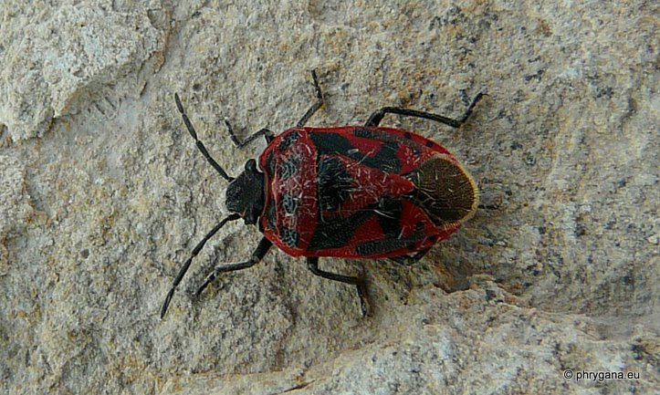
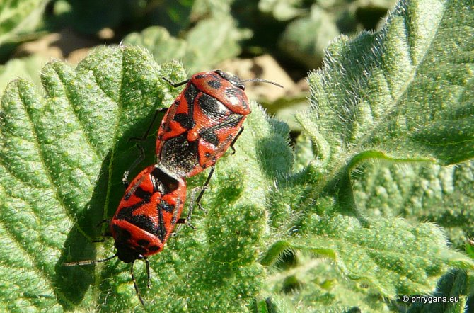
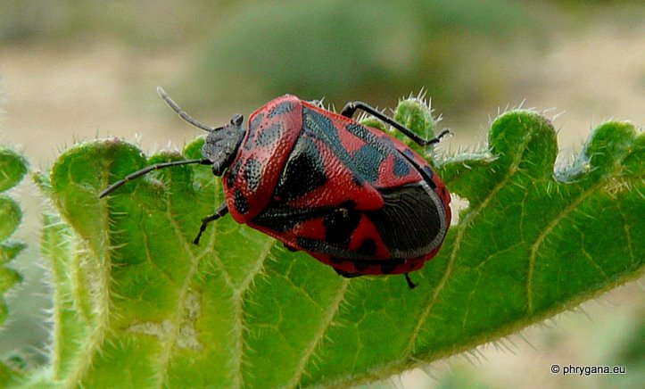
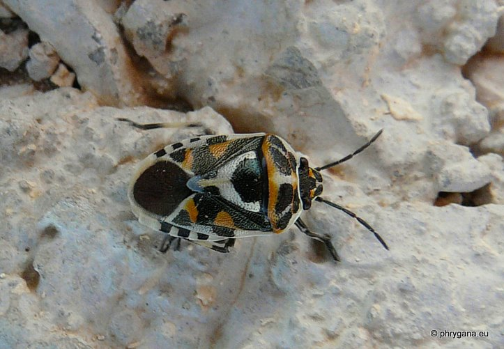
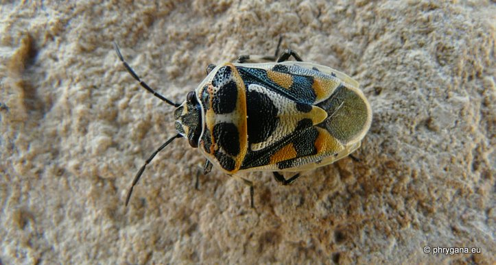
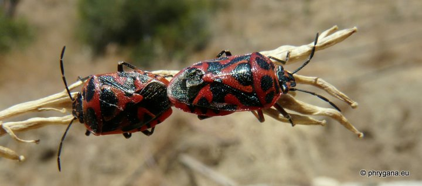

| PHRYGANA | Fauna | Flora | Galles | liste des espèces |
contact -
info - commentaires phrygana1 (at) gmail.com |
| Particularités crétoises | nouveautés | Mines | ressources naturelles |
| Eurydema (Eurydema) ornata (Linnaeus 1758) |
| 326 | Fauna | PENTATOMIDAE | PENTATOMINAE | Eurydema Laporte 1833 |
|
 Eurydema ornata Melambes (Agios Giorgos) 02 mars 2010 |
| fr: la Punaise rouge du chou en: Red Cabbage Bug |
| Espèce avec une duée de vie adulte de quelques mois |
| Longueur du corps entre 7 et 9 mm. Tête noire. Couleur de fond généralement rouge, avec des dessins noirs sur le pronotum (6 points) et le scutellum. Antennes noires. Pattes noires. Il existe des morphes avec d'autres couleurs sur fond blanc |
| Régime alimentaire: phytophage surtout sur des Brassicaceae (par ex. Brassica geniculata), cultivées ou sauvages |
| Oeufs en forme de tonneau, pondus sur la face inférieure en petits groupes; éclosion après deux semaines; développement rapide: quelque 6 semaines |
| Espèce probablement bivoltine |
| Période de vol: mars avril mai juin octobre novembre |
| Statut en Crète: indigène |
| Biotopes en Crète: phrygana, olivaies, garrigue, bords de chemins, jardins, terrains vagues, chaps abandonnés |
| Distribution: Europe, Turquie, Sibérie, Moyen-Orient. |
|
 Eurydema ornata Melambes (Agios Giorgos) 02 mars 2010 |
|
 Eurydema ornata Melambes (Agios Giorgos) 04 mars 2010 |
|
 Eurydema ornata Melambes (Agios Giorgos) 27 mai 2010 |
|
 Eurydema ornata Melambes (Agios Giorgos) 09 juin 2010 |
|
 Eurydema ornata Melambes (Agios Giorgos) 06 juin 2010 |
| 08 mars 2012 |
| © paul fontaine 2007 -- 2012 |